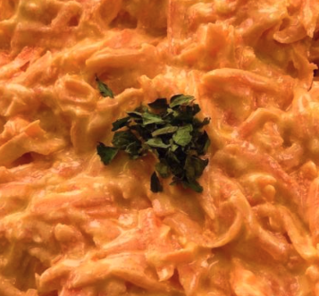

Ingredients
- 3 Tbsp olive oil (I use a mild extra virgin)
- 1 large clove of garlic, finely chopped
- 500 g (1 ⅛ lbs) carrot, peeled and shredded
- 250 g (1 cup) greek yoghurt
- 2 Tbsp extra virgin olive oil
- 1 Tbsp lemon juice
- pul biber (Aleppo pepper) or fresh herbs, to sprinkle over (optional)
- salt and pepper
Instructions
- Heat a large, thick bottomed frying pan over medium heat. Fry the garlic in the olive oil until just starting to soften but not yet coloured, around 30 seconds. Add the carrot. Fry until the carrot begins to soften, stirring regularly, 12-15 minutes. If necessary, add more olive oil during cooking. Set aside to cool.
- Mix the yoghurt, extra virgin olive oil and lemon juice with a little salt and pepper. Add the cooled carrot mixture and mix well. Season to taste with salt and pepper. Keep cool until serving. Sprinkle a few chili flakes or some finely chopped fresh herbs before serving, if you like.